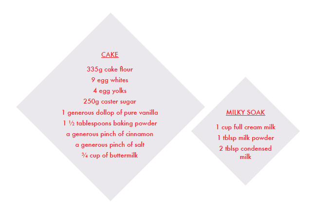
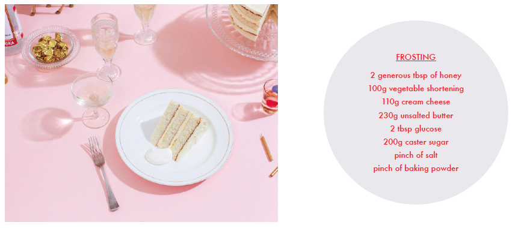

{kind=link}
It’s been said that Melbourne is a land of milk and honey.
And I’m pretty sure that’s not a reference to the 1984 John and Yoko
album of the same name. There’s no doubt it’s always becoming easier
to seek out interesting and unique products, made by people who have
a real connection with what they sell. Products like the honey hailing
from the rooftops of the Melbourne CBD, made by a group of committed
honey enthusiasts using old fashioned methods, producing old fashioned
honey that actually tastes AMAZING. And milk from Jonesy’s, a business
that’s part of a mini-revolution of sorts at the moment. Their products
promise superior quality; happier cows and happier farmers.

In order to achieve the layers in this cake, it’s essential to bake two
sheets of cake which will require you to bake two separate batches. You
will end up with a LOT of off cuts, they are for experimenting with, or
freezing for a rainy day. You will also require two cake rings, one with a
diameter of 125mm, and another 205mm. In addition to these you WILL need
acetate plastic film, available from art supply shops. Feel free to go down
your own path with different shaped cake rings too, square shapes would
look really neat, as a suggestion.
Before preparing the cake batter, line a 17 cm by 12 cm lamington tray
with baking paper. Preheat the oven to 180C.
Begin by sifting the flour, baking powder, and salt. Set aside.
Separate the eggs. Using a stand alone mixer on high speed, with a beater
attachment, whip the egg whites into stiff peaks. Rain in the sugar at the
end of this process and you should have a glossy stark white meringue.
Using a paddle attachment, mix on low speed incorporating the egg yolks,
one at a time. Keep the mixer on low and add ⅓ of the remaining dry
ingredients. Alternate with ⅓ of the buttermilk until everything is well
incorporated. Try not to over-mix, you want to keep the volume of the egg
whites without knocking too much air out of it.
Take this cake batter and pour into the lamington tin, smoothing the top
with a spatula. Let it sit for 5 minutes on a flat surface, as you want the
cake to rise as evenly as possible.
Pop it in the oven for 15 minutes, or until the top has turned a lovely
golden colour, and the middle springs back when poked. The cake should
have risen slightly too. If all is looking good, remove from the oven and
let cool for just a few minutes. Grab a fork and prick the cake all over.
Mix together the ingredients of the milky soak, and pour on top of the
cake. Allow to cool for another 5 minutes.
Now comes the fun part – grab the cake ring and cut out two large circles
and two smaller ones. Put the cake circles in a safe place while you mix
another batter, and bake another tray.
Once you have baked and cut out another tray of cake, gather your circles
together and put your cake rings on some baking paper, atop of a flat
wooden chopping board, or anything else that’s flat and will be ok to go
into the freezer. Using the acetate, line each cake ring on the inside.
The acetate will need to be high enough to support three layers of cake
with frosting, which will probably be about a cm or two thick in between
each layer.

For the frosting, start by creaming the butter and cream cheese together
in a stand alone mixer with paddle attachment. While this is happening,
melt the vegetable shortening in a pot on the stove or in the microwave.
Once the cream cheese and butter are light and voluptuous, add the melted
shortening a little at a time, mixing on a medium to high speed. Turn the
mixer down to low and stream in the glucose and vanilla. Crank the mixer
back up for another 2-3 minutes. Finally add the sugar and baking powder
and mix on low speed until completely incorporated. Flick the mixer back
up again to high, until the frosting is smooth and white.
Layer your cake by slotting in the first cake circle, followed by a layer
of frosting. Repeat until you have three layers of cake, and three layers
of frosting. Do the same with the smaller cake ring.
Put everything into the freezer for 12 hours so that the cake can
properly set. Once you have done this, pop the cake ring off, and
carefully unwrap the acetate. Viola! Your cake will be ready, and stable
enough for you to stack the small one on top of the bigger one. Let the
whole thing thaw in the fridge for an hour or two before serving.